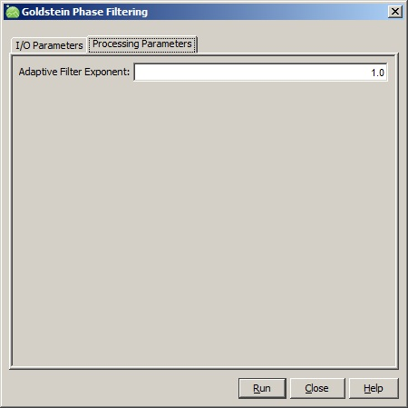

| Goldstein Phase Filtering |
|
The interferogram is cut into overlapping blocks (FFT blocks). In each block the 2-D spectrum is computed, its power spectrum is smoothed and raised to the power α (the filter exponent), and the spectrum is weighted with the result. This boosts the dominant fringe frequencies and suppresses noise. A larger α filters more strongly.
By default the operator uses the adaptive exponent of Baran et al. [2]: in each FFT block α = 1 − (mean coherence of the block), limited to [Adaptive alpha minimum, Adaptive alpha maximum]. The mean counts only coherence values above 0 and at most 1; coherence no-data (0) is not counted. Low-coherence (noisy) blocks are filtered strongly and high-coherence blocks only lightly. This needs a coherence band in the input product.
When the fixed exponent is used: the value of "Adaptive Filter Exponent in (0,1]" is used only when "Use adaptive alpha" is off, when the input product has no coherence band, or for an FFT block that contains no valid coherence values. With a coherence band present and adaptive alpha on (the default), the fixed exponent is not used.
Filtering changes the phase. Use the filtered interferogram for phase unwrapping and display, not for measuring phase values directly.
alpha): fixed filter exponent,
range (0, 1], default 1.0. The larger the value the stronger the filtering. Used only
when the adaptive exponent is not applied (see above).
useAdaptiveAlpha): compute α per FFT block
from the coherence band (Baran et al. [2]). Default: on. If no coherence band is
found, the operator falls back to the fixed exponent.
alphaMin): lower limit for the adaptive
α, range [0, 1], default 0.2. It must not be larger than the maximum.
alphaMax): upper limit for the adaptive
α, range [0, 1], default 1.0.
FFTSizeString): size of the square FFT block in pixels.
Values 32, 64, 128, 256; default 64. Ignored when "FFT Block Extent (m)" is greater than 0.
fftSizeMeters): FFT block size on the ground,
in metres. Default 0 (off: use FFT Size). When greater than 0, the block size in range
and in azimuth is computed separately from the pixel spacing, so the block covers about
the same ground distance in both directions. Each size is rounded to the nearest power
of two and limited to 8–512 pixels. This is recommended for Sentinel-1 IW: there a
64×64 pixel block covers about 224 m (range) × 895 m (azimuth) on
the ground.
windowSizeString): size of the window used to smooth the
power spectrum, in spectrum samples. Values 3, 5, 7; default 3.
useCoherenceMask): if on, pixels whose coherence
is below the threshold keep their unfiltered values. Default: off. Requires a coherence
band; the operator stops with an error if there is none.
coherenceThreshold): coherence
threshold for the coherence mask, range [0, 1], default 0.2. Used only when "Use
coherence mask" is on.

GPT operator: GoldsteinPhaseFiltering. Generated from the operator source; parameter names are those used in GPT and graph XML.
| Parameter | Type | Default | Allowed values | Unit | Description |
|---|---|---|---|---|---|
alpha | double | 1.0 | (0, 1] | Filter exponent (used when adaptive alpha is disabled) | |
useAdaptiveAlpha | Boolean | true | Adapt the filter exponent per FFT block from coherence (Baran 2003): alpha = clamp(1 - mean(coherence), [alphaMin, alphaMax]). Requires a coherence band in the source product. | ||
alphaMin | double | 0.2 | [0, 1] | Lower bound for adaptive alpha | |
alphaMax | double | 1.0 | [0, 1] | Upper bound for adaptive alpha | |
FFTSizeString | String | 64 | 32, 64, 128, 256 | FFT Size | |
fftSizeMeters | double | 0 | FFT block extent in metres. When greater than 0 the block size is derived per axis from the pixel spacing, so the block covers the same ground distance in range and azimuth instead of being square in pixels. Overrides FFT Size. Recommended: a square block in PIXELS is strongly anisotropic on the ground in radar geometry - for S1 IW a 64x64 block spans about 224 m x 895 m, a 4:1 footprint - which resolves fringe frequencies four times better in azimuth than in range. | ||
windowSizeString | String | 3 | 3, 5, 7 | Window Size | |
useCoherenceMask | Boolean | false | Use coherence mask | ||
coherenceThreshold | double | 0.2 | [0, 1] | The coherence threshold |